File: 000660.gt.txt (if the image is defective, simply delete all Arabic text and the line will be excluded)
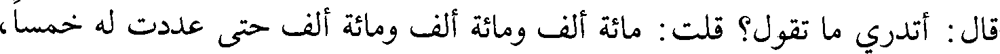
قال : أتدري ما تقول؟ قلت : مائة ألف ومائة ألف ومائة ألف حتى عددت له خمسا،
File: 000661.gt.txt (if the image is defective, simply delete all Arabic text and the line will be excluded)
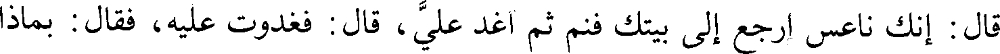
قال : إنك ناعس ارجع إلى بيتك فنم ثم اغد علي، قال : فغدوت عليه، فقال : بماذا
File: 000662.gt.txt (if the image is defective, simply delete all Arabic text and the line will be excluded)
جئت؟ قلت : خمسمائة ألف، قال : أطيب؟ قلت : نعم، لا أعلم إلا ذلك، فقال
File: 000663.gt.txt (if the image is defective, simply delete all Arabic text and the line will be excluded)
للناس : إنه قد قدم علي مال كثير، فإن شئتم أن نعده لكم عددا، وإن شئتم أن نكيله
File: 000664.gt.txt (if the image is defective, simply delete all Arabic text and the line will be excluded)
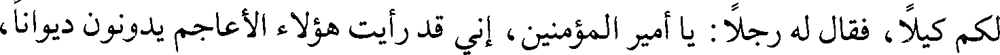
لكم كيلا، فقال له رجلا : يا أمير المؤمنين، إني قد رأيت هؤلاء الأعاجم يدونون ديوانا،
File: 000665.gt.txt (if the image is defective, simply delete all Arabic text and the line will be excluded)
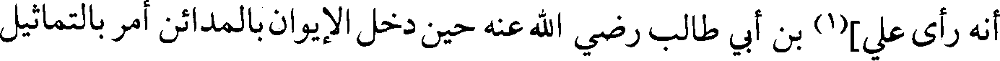
أنه رأى علي](1) بن أبي طالب رضي الله عنه حين دخل الإيوان بالمدائن أمر بالتماثيل
File: 000666.gt.txt (if the image is defective, simply delete all Arabic text and the line will be excluded)
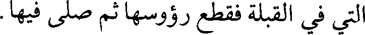
التي في القبلة فقطع رؤوسها ثم صلى فيها.
File: 000667.gt.txt (if the image is defective, simply delete all Arabic text and the line will be excluded)
[في ذكر قسم الفيء الذي أصيب بالمدائن](2)
File: 000668.gt.txt (if the image is defective, simply delete all Arabic text and the line will be excluded)
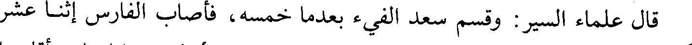
قال علماء السير: وقسم سعد الفيء بعدما خمسه، فأصاب الفارس إثنا عشر
File: 000669.gt.txt (if the image is defective, simply delete all Arabic text and the line will be excluded)
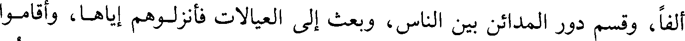
ألفا، وقسم دور المدائن بين الناس، وبعث إلى العيالات فأنزلوهم إياها، وأقاموا
File: 000670.gt.txt (if the image is defective, simply delete all Arabic text and the line will be excluded)
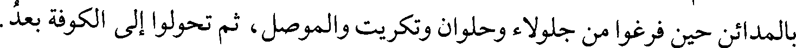
بالمدائن حين فرغوا من جلولاء وحلوان وتكريت والموصل، ثم تحولوا إلى الكوفة بعد.
File: 000671.gt.txt (if the image is defective, simply delete all Arabic text and the line will be excluded)
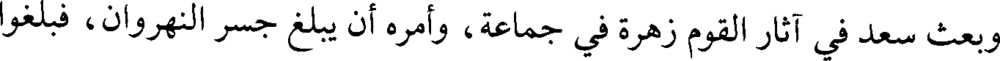
وبعث سعد في آثار القوم زهرة في جماعة، وأمره أن يبلغ جسر النهروان، فبلغوا
File: 000672.gt.txt (if the image is defective, simply delete all Arabic text and the line will be excluded)
هناك ثم رجعوا، ومضى المشركون نحو حلوان.
File: 000673.gt.txt (if the image is defective, simply delete all Arabic text and the line will be excluded)
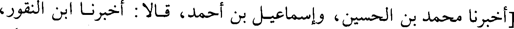
[أخبرنا محمد بن الحسين، وإسماعيل بن أحمد، قالا : أخبرنا ابن النقور،
File: 000674.gt.txt (if the image is defective, simply delete all Arabic text and the line will be excluded)
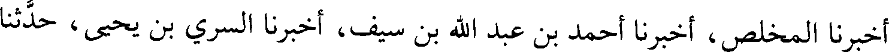
أخبرنا المخلص، أخبرنا أحمد بن عبد الله بن سيف، أخبرنا السري بن يحيى، حدثنا
File: 000675.gt.txt (if the image is defective, simply delete all Arabic text and the line will be excluded)
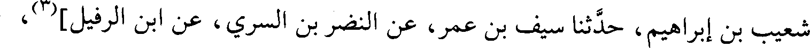
شعيب بن إبراهيم، حدثنا سيف بن عمر، عن النضر بن السري، عن ابن الرفيل](3)،
File: 000676.gt.txt (if the image is defective, simply delete all Arabic text and the line will be excluded)
عن أبيه الرفيل، قال(4):
File: 000677.gt.txt (if the image is defective, simply delete all Arabic text and the line will be excluded)
خرج زهرة / يتبعهم حتى انتهى إلى جسر النهروان وهم عليه، فازدحموا عليه، 79/ب
File: 000678.gt.txt (if the image is defective, simply delete all Arabic text and the line will be excluded)
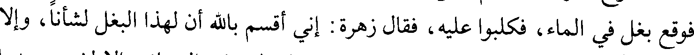
فوقع بغل في الماء، فكلبوا عليه، فقال زهرة : إني أقسم بالله أن لهذا البغل لشأنا، وإلا
File: 000679.gt.txt (if the image is defective, simply delete all Arabic text and the line will be excluded)
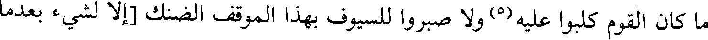
ما كان القوم كلبوا عليه(5) ولا صبروا للسيوف بهذا الموقف الضنك [إلا لشيء بعدما
File: 000680.gt.txt (if the image is defective, simply delete all Arabic text and the line will be excluded)
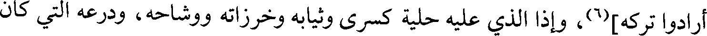
أرادوا تركه](6)، وإذا الذي عليه حلية كسرى وثيابه وخرزاته ووشاحه، ودرعه التي كان
File: 000681.gt.txt (if the image is defective, simply delete all Arabic text and the line will be excluded)
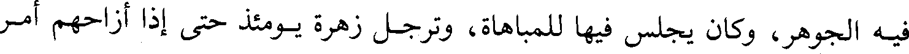
فيه الجوهر، وكان يجلس فيها للمباهاة، وترجل زهرة يومئذ حتى إذا أزاحهم أمر
File: 000682.gt.txt (if the image is defective, simply delete all Arabic text and the line will be excluded)
File: 000683.gt.txt (if the image is defective, simply delete all Arabic text and the line will be excluded)
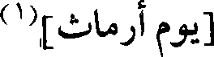
[يوم أرماث](1)
File: 000684.gt.txt (if the image is defective, simply delete all Arabic text and the line will be excluded)
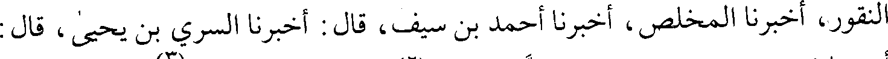
النقور، أخبرنا المخلص، أخبرنا أحمد بن سيف، قال : أخبرنا السري بن يحيى، قال :
File: 000685.gt.txt (if the image is defective, simply delete all Arabic text and the line will be excluded)
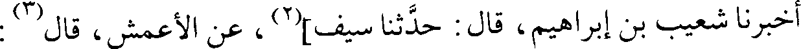
أخبرنا شعيب بن إبراهيم، قال : حدثنا سيف](2)، عن الأعمش، قال(3) :
File: 000686.gt.txt (if the image is defective, simply delete all Arabic text and the line will be excluded)
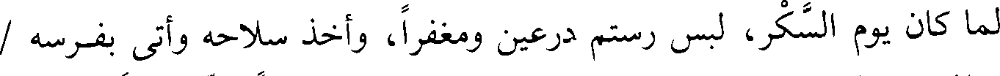
لما كان يوم السكر، لبس رستم درعين ومغفرا، وأخذ سلاحه وأتى بفرسه /
File: 000687.gt.txt (if the image is defective, simply delete all Arabic text and the line will be excluded)
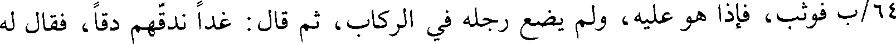
64/ب فوثب، فإذا هو عليه، ولم يضع رجله في الركاب، ثم قال : غدا ندقهم دقا، فقال له
File: 000688.gt.txt (if the image is defective, simply delete all Arabic text and the line will be excluded)
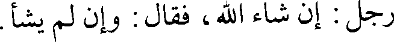
رجل : إن شاء الله، فقال : وإن لم يشأ.
File: 000689.gt.txt (if the image is defective, simply delete all Arabic text and the line will be excluded)
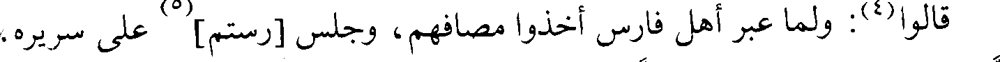
قالوا(4): ولما عبر أهل فارس أخذوا مصافهم، وجلس [رستم](5) على سريره،
To Save: `Ctrl+s`, make sure to choose `Webpage, complete`!